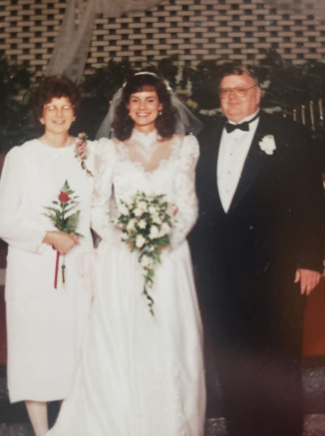

Two stepdaughters, raised as his own FAMILY ACCOUNT Susan Ruth Shamblen (b. 25 November 1960, Cincinnati) FAMILY ACCOUNT Tricia Marie Shamblen (deceased 2016) FAMILY ACCOUNT
Siblings
William Clarence "Bill" McGregor, b. 14 April 1936, Benton, Kentucky, d. 2 June 2021, Harrison, Ohio DOCUMENTED
Wayne Martin McGregor, lived in Germany FAMILY ACCOUNT
Tom, Bill, and Wayne were all sons of James W. McGregor and Marye Hooper, as named in Bill's obituary.
1937 · age 0 Born, Benton, Marshall County, Kentucky SUPPORTED
1976 · age 38 Married Ruth Laverne McKinney, 10 July 1976 FAMILY ACCOUNT
2022 · age 84 Died, between 1 February and 11 May 2022, after a hospital stay for kidney and liver failure, Cincinnati area, Ohio SUPPORTED
Life Story
James Thomas McGregor, known as Tom, was born 22 December 1937 in Benton, Marshall County, Kentucky, the son of Rev. James William McGregor and Marye Elizabeth Hooper {SUP}. He grew up in Kentucky with his brothers William Clarence, called Bill, and Wayne Martin {DOC}. His parents are buried at Harrison, Hamilton County, Ohio {SUP}.
Tom worked at the Post Office, and he told stories of his walks and routes {FAM}. He and Ruth attended Kenwood Baptist Church every Sunday, where Tom counted the money after service {FAM}.
Tom married Ruth Laverne McKinney on 10 July 1976 {FAM}. Ruth had been widowed in 1968, and Tom raised her two daughters as his own {FAM}. He was a steady presence in the family for the rest of Ruth's life, and after her death in 2018 he remained close to the family.
In his final illness Tom was cared for at home by family until his final breath {FAM}. He was hospitalised on 1 February 2022 with kidney and liver failure, and he was gone by 11 May 2022 {SUP}. He was cremated, and the family holds his ashes {FAM}. No obituary has been found, and his exact death date is not yet proved — it is carried here only as the February to May 2022 window the dated family records support {UNP}.
Photo Gallery
Living family members are left out of public photos.
Tom with Ruth

Ruth, Tricia, and Tom at a wedding
Sources and Evidence
Geni profile for James Thomas McGregor, read 2026-10-10 — birth 22 December 1937, Benton, Kentucky; parents James William McGregor and Marye Elizabeth Hooper; brothers William Clarence and Wayne Martin SUPPORTED
William C. McGregor obituary, Brater Winter Funeral Home, Harrison, Ohio, 2 June 2021 — names his surviving brothers James Thomas McGregor and Wayne Martin McGregor, sons of James W. and Marye (Hooper) McGregor DOCUMENTED
Family records bounding Tom's death: hospital post 1 February 2022 and remembrance post 11 May 2022 SUPPORTED
Ancestry harvest note 2026-10-31, from Tricia's Shamblen/McKinney Family Tree — marriage to Ruth 10 July 1976, birth 22 December 1937, Benton, Kentucky, died 2022 FAMILY ACCOUNT
Grades: DOCUMENTED an original record says it · SUPPORTED several records point to it · FAMILY ACCOUNT the family's own telling · UNPROVED a lead, not proved.
Research Notes and Open Questions
Exact death date UNPROVED — carried only as between 1 February and 11 May 2022, likely February or March 2022. A paid Ohio death certificate order is the remaining route, parked as a note, not an ask.
No obituary found in free sources; family may not have published one.
Geni and Ancestry URLs for Tom were not verified from a profile Doc export — Geni and Ancestry tree links are left blank, not invented. Verified IDs on file: FamilySearch PN3V-7JQ, WikiTree McGregor-7782, Ancestry person 162814676242.
Portrait is Tom with Ruth from the Lawrence × Ruth Pictures folder — no solo portrait of Tom was identified in the folders read; his Geni tuxedo portrait (uploaded 13 March 2022) is a better solo candidate if it can be obtained.